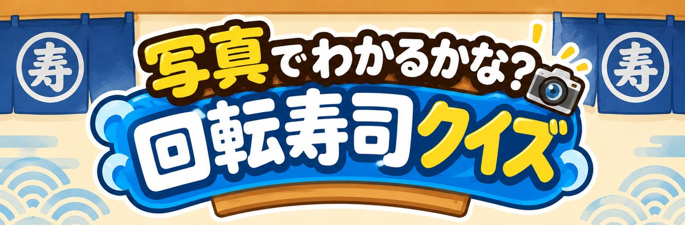
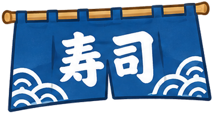
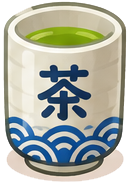
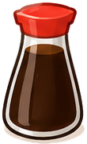
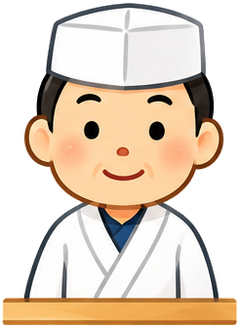
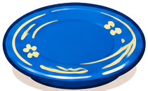
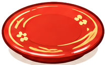
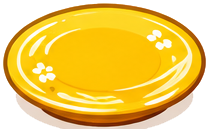

へい、らっしゃい！レーンに のって、さかなの 写真が ながれてくるよ。 目の前で 止まったら、何の さかなか えらんでね。あたったら、その おさらは きみの もの！

100円
200円
500円さかなの 写真は、自由に つかって よい 写真を ウィキメディア・コモンズ から かりて、大きさを そろえた ものです。とった人・ライセンス・もとの ページは つぎの とおりです。ひとことの 文は この ゲームで 書いた ものです。